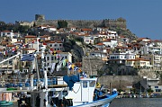
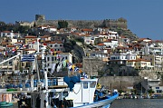

Disclaimer: These pages are not actively maintained, and some of the practical information on the site is out of date. I am working on a new version of the site that will focus more on my photos and memories of travel in Southeast Europe, and less on practical details that too easily become obsolete. In the meantime, please treat the information here with caution.


Welcome to Balkanology
Balkanology is a website about travel in the Balkan Peninsula. Since my first visit in 2002 I have travelled many times to this fascinating corner of Europe, and I hope this site will encourage other people to do the same.
Southeast Europe is a great destination for independent travel, but I know that some prospective visitors find it difficult to track down the information they need - especially for the less touristed parts of the region. This site aims to fill in some of the gaps by passing on the knowledge I have accumulated while exploring the Balkans. You'll find a section about each Balkan country, with travel advice and suggested places to visit. These pages are based on my own interests and experiences, and are not intended to provide an exhaustive guide to every possible destination. For those searching for more detailed information, I have included links to other useful websites, suggested guidebooks and background reading, and answers to questions frequently asked by travellers.
Because many people visit several Balkan countries in a single trip, the individual country sections are supplemented by an Overview with similar information about the region as a whole. If you haven't visited the site before, the Overview is a good place to start.
There are some photos scattered around this site to give you a hint of what you might see in the Balkans, but the focus here is on information rather than pictures. I hope you will also visit The Balkanology Galleries, a separate site with over 1500 of my photos from Southeast Europe.
I update Balkanology on a regular basis, expanding the coverage of particular destinations or in response to developments in the Balkan travel scene. If you have visited the site before, the What's New page will bring you up to date with recent changes. If you'd like to be informed about future additions to the site, consider subscribing to the Balkanology Blog. And if you'd like to contribute to the site yourself, I would be pleased to hear from you.
In the preface to his guide to Durmitor National Park, Branislav Cerović wrote: "I will be very happy if using this guidebook, you feel that it has not been written as an advertisement, but to make you the richer for an experience that you in your turn will pass on to others". Apart from substituting "website" for "guidebook", I can't think of a better summary of the intention behind Balkanology. I hope you will enjoy visiting the site, and who knows, perhaps we will meet some day in a carriage on the Bosfor Express...
The Balkans according to me: some notes on terminology
Almost everyone who writes about the Balkans feels the need to start by explaining what they mean by the term, and I'm no exception. "The Balkans" is essentially the part of Europe that sticks out into the Mediterranean between the Adriatic and Black Seas, but there is no general agreement about the location of its northern border. I have chosen to use a broad definition simply because it suits the purpose of this site. Many people would describe all or part of Slovenia, Croatia, Serbia and Romania as "Central European" rather than "Balkan". While I understand those arguments, I prefer to think of Central Europe and the Balkans as overlapping rather than mutually exclusive, so this site includes coverage of all those areas.
The sections on Greece and Turkey cover only the Greek mainland and the small part of Turkey on the European continent.
I have used the terms "Balkans" and "Southeast Europe" more or less interchangeably. Some people prefer the latter as they feel that the term "Balkan" carries negative implications. I hope I can be excused from the suspicion of any such derogatory intentions: if I had a negative view of the Balkans, this site wouldn't exist.
All text and photography copyright Alan Grant 2006-2016, except where other contributors are named.


 
